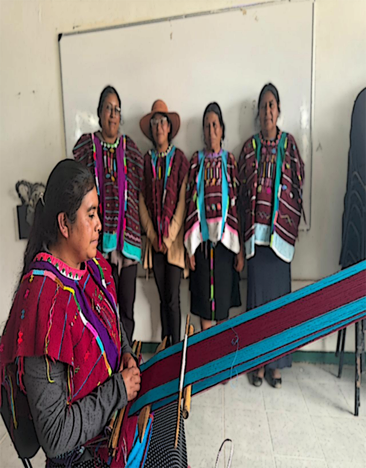

CECYTEO.EDU.MX
CECYTEO.EDU.MX  CECYTE.emsad
CECYTE.emsad  MUSEODETEXTIL
MUSEODETEXTIL

San Martín Itunyoso es un municipio con identidad triqui,caracterizado por
la conservación de su lengua,sus costumbres y sus tradiciones.Una de las
expresiones culturales más importantes es la elaboración artesanal de
huipiles,prendas que tienen un gran significado cultural y representan la
historia y la identidad del pueblo.En esta página web se presenta el trabajo
del Proyecto Escolar Comunitario(PEC),donde se muestran diferentes
artículos y contenidos relacionados con la cultura historia y tradiciones de
San Martin Itunyoso.Este proyecto tiene como propósito fortalecer el
conocimiento y el respeto por la cultura local dentro de la comunidad
escolar.
 CECYTEO.EDU.MX
CECYTEO.EDU.MX  CECYTE.emsad
CECYTE.emsad  MUSEODETEXTIL
MUSEODETEXTIL